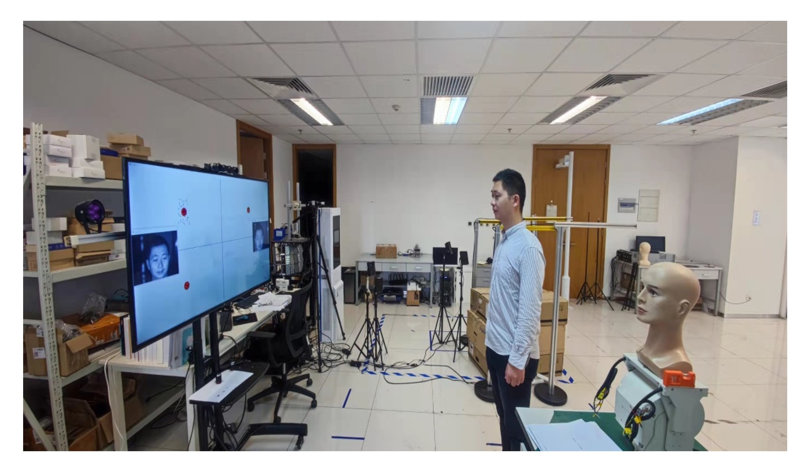

Kunbo Zhang is an Associate Professor at Center for Research on Intelligent Percetion and Computing (CRIPAC), State Key Laboratory of Multimodal Artificial Intelligence Systems (MAIS), Institute of Automation, Chinese Academy of Sciences (CASIA). He is also the Deputy Director of Tianjin Academy for Intelligent Recognition Technologies (TAFIRT). He received his B.A. in Automation from Beijing Institute of Technology, and his M.S. and Ph.D. from State University of New York at Stony Brook. He was a Post-doc in NLPR CASIA. Prior to joining CASIA, he worked as a Manufacturing Engineer in Nexteer Automotive (Michigan, U.S.). His research interest focuses on Biometrics, Computational Photography, Optoelectronic Computing, Intelligent Systems, and AI Applications.
The center (CRIPAC 智能感知与计算研究中心) aims at conducting cutting-edge researchand applications, and strives to build a world-class research organization in terms of personnel training, technological innovation and technology transfer. CRIPAC research area mainly focuses on Intelligent Sensing Foundation, Biologically-Inspired Intelligent Computing, Biometrics and Forensics, and Multimodal Intelligent Computing. The Smart Iris Recognition (SIR group) concentrates on cutting-edge research of ocular biometrics, wherein the main focus is the whole pipeline of iris recognition. The topics basically include the trial-manufacture of iris imaging device, the control of iris image acquisition, iris image preprocessing, iris feature encoding and matching.
Open positions: we have positions available for competitive Ph.D./M.S. student, engineer, and intern for research and development in both Beijing and Tianjin. Please check our research projects and contact me if you are interested in working on cutting edge AI related academic research and industrial projects.
- 10/2023 The new affective perception research is published on ACM-MM. This work was inspired by the concept of viration imaging and we introduced the multidoal based method to percept human affetion and psychology in a real-time non-contact way. “Sensing Micro-Motion Human Patterns using Multimodal mmRadar and Video Signal for Affective and Psychological Intelligence” (https://dl.acm.org/doi/abs/10.1145/3581783.3611754)
- 8/2023 Our new face anti-spoofing research result will appear in IEEE-TIFS. This work explores the possibility to use normal RGB cameras for robust face anti-spoofing by making use of the unique polarized information advantages in material discrimination. “Polarized Image Translation from Nonpolarized Cameras for Multimodal Face Anti-spoofing” (基于转译偏振图的非偏振相机多模态人脸活体检测)
- 7/2023 Our long-awaited research inspired by graph representation to solve biometric recognition problems is published in IEEE-TPAMI. “Multiscale Dynamic Graph Representation for Biometric Recognition with Occlusions” (遮挡情况下多尺度动态图表征的生物特征识别) [Pdf] [Link]
- 5/2023 Our paper focusing on face anti-spoofing, “Unified polarimetric method for cross-domain face attacks detection” (针对人脸跨域攻击的统一偏振检测方法), is accepted by Second International Conference on Algorithms, Microchips, and Network Applications (AMNA 2023).[Pdf] [Link]
- 4/2023 As one of our continuous work on iris recognition, the new journal paper “Iris-GuideNet: Guided Localisation and Segmentation Network for Unconstrained Iris Biometrics” (非受控场景下的引导式虹膜定位于分割网络) is published in IEEE-TIFS.[Pdf] [Link]
- 1/2023 Our new light field research, “AIF-LFNet: All-in-Focus Light Field Super-Resolution Method Considering the Depth-Varying Defocus” (基于深度变化散焦的全聚焦光场超分辨方法), collaborated with Prof. Shubo Zhou from Donghua University is published in IEEE-TCSVT. A super-resolution task that reconstructs all-in-focus high-resolution (HR) LF images from low-resolution (LR) LF images is proposed by designing a large dataset and proposing a convolutional neural network (CNN) -based SR method. [Pdf] [Link]
- 1/2023 We secure a project to implement pipeline leakage auto inspection for 中国铝业广西华昇新材料有限公司. (基于前端计算的群体相机跑冒滴漏视觉检测)
- 12/2022 Our journal paper “Pose-Appearance Relational Modeling for Video Action Recognition” (基于姿态表征关联建模的视频运动识别) has been accepted by IEEE-TIP. We propose a Pose-Appearance Relational Network (PARNet) to model the correlation between human pose and image appearance and improve the robustness towards unconstrained real-world videos. [Pdf] [Link]
- 12/2022 Our proposal is supported by open fund project from Information System Requirement Key Laboratory. (基于弱标注信息的多模态数据标识技术研究)
- 12/2022 Our proposal is supported by China Association for Science and Technology. (中国科协科技群团智库成果采集项目-工业服务视频新基建智库成果数字化平台建设)
- 10/2022 Five national standards I have participated in formulation have been released. GB/T 41819-2022 《信息安全技术 人脸识别数据安全要求》 | GB/T 41871-2022 《信息安全技术 汽车数据处理安全要求》 | GB/T 41988-2022 《公共安全 虹膜识别应用 图像技术要求》 | GB/T 41990-2022 《公共安全 虹膜识别应用 采集设备》 | GB/T 41989-2022 《公共安全 虹膜识别应用算法评测方法》.
- 8/2022 Our proposal is successfully selected by China Association for Science and Technology and I am part of the consulting expert team. (2022年中国科协决策咨询专家团队-工业服务视频新基建的发展路径和政策建议)
- 5/2022 Our proposal is funded by State GRID Corporation of China. (国家电网有限公司大数据中心-面向细粒度目标的零样本知识迁移学习及缺陷识别关键技术研究)
- 1/2022 We have acquired another fund from National Key Research and Development Program of China. (国家重点研发计划课题)
- 11/2021 Our proposal "Multi-modal detection method for biometric presentation attacks" is supported by open fund project from TRIMPS. (公安部第三研究所/上海网络与信息安全测评工程技术研究中心-生物特征识别呈现攻击多模态检测技术研究)
- 10/2021 We have three papers accepted by IJCB 2021. "Avoiding Spectacles Reflections on Iris Images Using A Ray-tracing Method" (虹膜图像偏振反光去除) [Link] | "An End-to-End Autofocus Camera for Iris on the Move" (端到端的行进中虹膜自动对焦相机) [Link] | "NIR iris challenge evaluation in non-cooperative environments: Segmentation and localization" (近红外非配合场景虹膜分割与定位竞赛) [Link].
- 5/2021 We have a paper "CASIA-Face-Africa: A Large-Scale African Face Image Database" published in IEEE-TIFS. We established an African face image dataset and provided baselines of face recognition algorithms. [Pdf] [Link]
- 5/2021 Our proposal is supported for computational photography research on object identification in challenging environment.
- 10/2020 Two papers accepted by IJCB 2020. "All-in-Focus Iris Camera With a Great Capture Volume" is awarded as IJCB 2020 Google Best Paper Award Runner-Up.[Pdf][Link]
- 8/2020 Our proposal "High Throughput Computational Imaging for Iris Recognition in Crowds" is successfully supported by National Natural Science Foundation of China. (国家自然科学基金面上项目-群体虹膜识别的高通量计算成像方法研究)
- 7/2019 We have acquired the fund from National Key Research and Development Program of China. (国家重点研发计划项目和课题)
- 11/2017 Our proposal "Assembly Technology Visual Understanding Method and Application" is supported by Key Research and Development Program of Sichuan. (四川省重点研发计划/四川省省院省校科技合作研发重点项目-装配工艺视觉智能解析技术及应用)
- 11/2017 Our proposal "Intelligent Computational Photography Technology and Applications in Industrial Machine vision" is supported by Key Research and Development Program of Tianjin. (天津市重点研发计划/京津冀科技成果转化项目-智能计算成像技术及其在工业机器视觉中应用的研究)
Current Grants
Past Grants
- Information System Requirement Key Lab Open Fund Project 基于弱标注信息的多模态数据标识技术研究2022-present
- Contract application program for CHALCO2022-present
- NSFC General Program 2021-present
- National Key Research and Development Program of China (Project #2)2021-present
- National Research Program2021-present
- TRIMPS Open Fund Program2021-present
- Strategic Priority Research Program of the Chinese Academy of Sciences (A, sub-project)2020-present
- National Key Research and Development Program of China (Project #1)2019-present
Past Grants
- National Key Research Program (Project)2019-2022
- Contract application program for Shandong Energy Group2020-2022
- Strategic Priority Research Program of the Chinese Academy of Sciences (C, project)2021-2021
- Contract application program for Langjiu2020-2021
- Contract application program for Shougang2019-2020
- National Key Research and Development Program of China (Sub-project #1)2017-2020
- Key Research and Development Program of Tianjin2017-2020
- Key Research and Development Program of Sichuan2017-2020
- IEEE-TPAMI | Min Ren, Yunlong Wang, Yuhao Zhu, Kunbo Zhang, Zhenan Sun. "Multiscale Dynamic Graph Representation for Biometric Recognition with Occlusions." IEEE Transactions on Pattern Analysis and Machine Intelligence (2023). [Link]
- IEEE-TIFS | Jawad Muhammad, Caiyong Wang, Yunlong Wang, Kunbo Zhang, Zhenan Sun. "Iris-GuideNet: Guided Localisation and Segmentation Network for Unconstrained Iris Biometrics." IEEE Transactions on Information Forensics and Security (2023). [Link]
- IEEE-TCSVT | Shubo Zhou, Liang Hu, Yunlong Wang, Zhenan Sun, Kunbo Zhang, Xue-qin Jiang. "AIF-LFNet: All-in-focus light field super-resolution method considering the depth-varying defocus." IEEE Transactions on Circuits and Systems for Video Technology (2023). [Link]
- IEEE-TIP | Cui, Mengmeng, Wei Wang, Kunbo Zhang, Zhenan Sun, and Liang Wang. "Pose-Appearance Relational Modeling for Video Action Recognition." IEEE Transactions on Image Processing (2022). [Link]
- arXiv | Zhang, Kaiduo, Muyi Sun, Jianxin Sun, Binghao Zhao, Kunbo Zhang, Zhenan Sun, and Tieniu Tan. "HumanDiffusion: a Coarse-to-Fine Alignment Diffusion Framework for Controllable Text-Driven Person Image Generation." arXiv preprint arXiv:2211.06235 (2022). [Link]
- IJCB | Wang, Caiyong, Yunlong Wang, Kunbo Zhang, Jawad Muhammad, Tianhao Lu, Qi Zhang, Qichuan Tian et al. "NIR iris challenge evaluation in non-cooperative environments: Segmentation and localization." In 2021 IEEE International Joint Conference on Biometrics (IJCB), pp. 1-10. IEEE, 2021. [Link]
- IEEE-TIFS | Muhammad, Jawad, Yunlong Wang, Caiyong Wang, Kunbo Zhang, and Zhenan Sun. "CASIA-face-Africa: A large-scale African face image database." IEEE Transactions on Information Forensics and Security 16 (2021): 3634-3646. [Link]
- ICAIP | Tian, Yu, Kunbo Zhang, Leyuan Wang, and Zhenan Sun. "Face anti-spoofing by learning polarization cues in a real-world scenario." In 2020 4th International Conference on Advances in Image Processing, pp. 129-137. 2020. [Link]
- IJCB | Zhang, Kunbo, Zhenteng Shen, Yunlong Wang, and Zhenan Sun. "All-in-focus iris camera with a great capture volume." In 2020 IEEE International Joint Conference on Biometrics (IJCB), pp. 1-9. IEEE, 2020. (IJCB 2020 Google Best Paper Award Runner-Up) [Link]
- IEEE-TCI | Wang, Yunlong, Fei Liu, Kunbo Zhang, Zilei Wang, Zhenan Sun, and Tieniu Tan. "High-fidelity view synthesis for light field imaging with extended pseudo 4DCNN." IEEE Transactions on Computational Imaging 6 (2020): 830-842. [Link]
- IEEE-TIP | Wang, Yunlong, Fei Liu, Kunbo Zhang, Guangqi Hou, Zhenan Sun, and Tieniu Tan. "LFNet: A novel bidirectional recurrent convolutional neural network for light-field image super-resolution." IEEE Transactions on Image Processing 27, no. 9 (2018): 4274-4286. [Link]
Research Directions
Current Projects

Current Projects
-
Robust Face Anti-spoofing from Cross-modal Visual Clues | 基于跨模态视觉线索的鲁棒人脸活体检测方法

Tian Yu, Yalin Huang, Kunbo ZhangWe tackle the face anti-spoofing problem from the angle of physics by using of multi-modal visual information. To overcome the drawbacks of prevous methods, the knowledge of light intensity and light osillation angle are introduced for a thorough understanding of the difference between genuine face and fake attack. -
High-throuput Iris Recognition System | 高通量虹膜识别系统

Kunbo Zhang, Zhenteng Shen, Yunlong WangTo develop next generation iris recognition system, we are working on multi-modal biometric imaging devices, recognition algorithm, and integrated system together. High-throughput system requires extremly efficient and accurate biometric information capture and handling. Our new sytem is able to recognize multiple -person iris in an extended capture volume (up to 3 persons at 10 m distance) and accomplish single-person iris-on-the move recognition. Currently we are developing and testing version 3.0 system. -
Extended DoF Eye-tracking Equipment and Applications in Human-machine Interaction | 景深扩展的眼动追踪设备及人机交互应用
Kunbo Zhang, Zhenteng Shen, Yunlong WangWe design and develope the innovative binocular long distance eye tracking equipment.The focus-tunbale lens is used to extended the depth-of-field of traditional eye tracking device. The fast response and precise control imaging setup allows to track two-pair of human eyes over 1.5 m distance simultaneously.